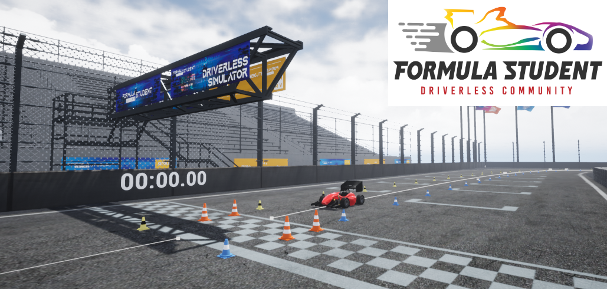

Formula Student Driverless Simulator
Welcome to the FSDS documentation.
This home page contains an index with a brief description of the different sections in the documentation. Feel free to read in whatever order preferred. In any case, here are a few suggestions for newcomers.
- Get familiar with the architecture. The system overview introduces you to the ideas and concepts of the system.
- Launch the simulator. Follow the getting started guide to get the simulation up and running.
- Connect your autonomous system. Either use the ROS bridge or Python client
Looking for details on FSOnline 2020?
Please visit version v1.4.1 for a the code used during FS-Online. That version also includes the integration guide describing the rules regarding sensors of FSOnline 2020.
